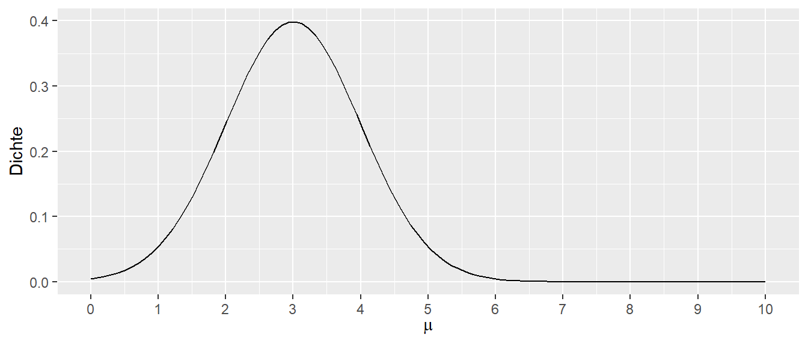

| \(\mu\) | Dichte |
|---|---|
| 0 | 0.004 |
| 1 | 0.054 |
| 2 | 0.242 |
| 3 | 0.399 |
| 4 | 0.242 |
| 5 | 0.054 |
| 6 | 0.004 |
17 Maximum-Likelihood
17.1 Likelihood
Im Zuge der theoretischen Verteilungen wird die Dichtefunktion betrachtet. Für eine gegebene Zufallsvariable kann die Dichte für einen gegebenen Wert, z.B. \(y_i\), über die Dichtefunktion berechnet werden. Wenn eine Zufallsvariable \(X\) einer Normalverteilung folgt, wird die Verteilung von \(X\) mittels der bekannten Dichtefunktion der Normalverteilung beschrieben:
\[\begin{equation*} f(X|\mu,\sigma^2) = \frac{1}{\sqrt{2 \pi \sigma^2}} \exp\left(-\frac{1}{2}\frac{(X - \mu)^2}{\sigma^2}\right) \end{equation*}\]
Hier wird die Dichte von \(X\) als eine Funktion von \(\mu\) und \(\sigma^2\) aufgefasst. Das bedeutet, die Werte für \(\mu\) und \(\sigma\) müssen vorgegeben sein, da diese benötigt werden, um die Dichte zu berechnen.
Nun erfolgt ein Perspektivwechsel. Es ist möglich, die Zufallsvariable \(X\) als gegeben anzusehen und die Dichte für verschiedene Werte von \(\mu\) und \(\sigma^2\) abzutragen. Der Einfachheit halber wird angenommen, dass \(\sigma^2\) bekannt ist und \(\mu\) ermittelt werden soll. Eine mögliche Fragestellung lautet: Für einen beobachteten Wert \(x\), welcher Wert für \(\mu\) ist am plausibelsten? Dazu können verschiedene Dichtewerte für ein gegebenes \(x\) in Abhängigkeit von \(\mu\) dargestellt werden. Die Funktion wird interpretiert als:
\[ f(\mu|x,\sigma^2) = \frac{1}{\sqrt{2 \pi \sigma^2}} \exp\left(-\frac{1}{2}\frac{(X - \mu)^2}{\sigma^2}\right) \]
Diese Funktion wird als die Likelihood-Funktion bezeichnet. Das Maximum dieser Funktion kann als derjenige Wert interpretiert werden, bei dem \(\mu\) die maximal mögliche Dichte einnimmt.
Ein Beispiel illustriert dies: Ein Wert \(x = 3\) wird beobachtet, und es ist bekannt, dass \(\sigma = 1\) ist. Natürlich reicht ein einzelner Wert nicht aus, um definitive Aussagen zu treffen, aber das Prinzip soll verdeutlicht werden. Eine Tabelle wird erstellt, die verschiedene Werte von \(\mu_i = [0,1,2,3,4,5,6]\) enthält und die Dichte \(f(\mu|x=3,\sigma^2=1)\) für jeden dieser Werte berechnet (siehe Tabelle 17.1).
Beim Betrachten der Werte in Tabelle 17.1 zeigt sich, dass der Wert bei \(\mu = 3\) die größte Dichte aufweist. Um dies weiter zu verdeutlichen, wird das Ganze als kontinuierlicher Graph dargestellt.

In Abbildung 17.1 ist zu erkennen, dass das Maximum der Likelihood-Funktion beim Wert \(\mu = 3\) liegt. Die Normalverteilung mit \(\mathcal{N}(\mu=3, \sigma=1)\) ist diejenige, die die höchste Dichte produziert und daher auch die höchste Likelihood hat, den beobachteten Wert zu erzeugen. Dies ist intuitiv nachvollziehbar: Wenn ein Wert aus einer Normalverteilung stammt und nur ein einziger Wert vorliegt, macht es Sinn, diejenige Normalverteilung mit dem Mittelwert \(\mu\) zu wählen, die an der Stelle des beobachteten Werts liegt.
Das Beispiel wird erweitert: Zwei Werte \(x_1 = 1\) und \(x_2 = 2\) werden betrachtet. Es wird angenommen, dass die beiden Werte unabhängig voneinander sind. Dadurch können die Dichten für die beiden Werte multipliziert werden. Die Likelihood-Funktion \(L\) hat dann die folgende Form:
\[\begin{equation*} L = f(\mu|x_1,\sigma) \cdot f(\mu|x_2,\sigma) \end{equation*}\]
Ein Graph von \(L\) für verschiedene \(\mu\) bei gegebenem \(\sigma = 1\) wird erstellt:

In Abbildung 17.2 liegt das Maximum von \(L\) bei \(\mu = 1.5\), was dem Mittelwert \(\bar{x} = \frac{1}{2}\sum_{i=1}^2 x_i\) entspricht. Intuitiv ist dies nachvollziehbar: Wenn beiden Werten die gleiche Bedeutung zugemessen wird, liegt die Verteilung, die genau in der Mitte zwischen den beiden Werten liegt, am ehesten mit der Erzeugung der beiden Werte im Einklang.
Die Likelihood-Funktion \(L\) beschreibt die Wahrscheinlichkeit, mit der eine gegebene Stichprobe, in Abhängigkeit von den Parametern, aus einer bestimmten Verteilung stammt. Sie gibt an, wie gut die beobachteten Daten zu einem bestimmten Satz von Parametern passen. Formal wird die Likelihood-Funktion \(L\) als gemeinsame Wahrscheinlichkeitsdichte der Stichprobe betrachtet, interpretiert als Funktion der Parameter \(\theta\). Die beobachteten Werte werden als festgelegt, die Parameter als Variablen betrachtet. Es handelt sich dabei jedoch nicht um eine Dichtefunktion; das Integral der Likelihood-Funktion ist daher nicht \(1\).
17.2 Maximum-likelihood
17.3 Maximum-likelihood Methode bei der einfachen linearen Regression
Eine alternative Herleitung für \(\beta_0\) und \(\beta_1\) kann über die sogenannte Maximum-Likelihood-Methode durchgeführt werden. Dabei gehen die Verteilungsannahmen der Variablen direkt in die Herleitung ein.
Im Fall der Regression hat die Likelihood-Funktion \(L\) für einen einzelnen Wert die folgende Form:
\[\begin{equation} L(\beta_0, \beta_1, \sigma^2|y_i) = \frac{1}{\sqrt{2\pi\sigma^2}} \exp\left(-\frac{(y_i - \beta_0 - \beta_1 x_i)^2}{2\sigma^2}\right) \label{eq-slm-inf-lik-01} \end{equation}\]
Die Parameter \(\theta\) der Likelihood-Funktion sind \(\beta_0, \beta_1\) und \(\sigma\). Da bei der Regressionsanalyse mehrere Wertepaare \((y_i, x_i)\) vorliegen, können die jeweiligen Likelihoods multipliziert werden. Dies führt zu einer Gesamt-Likelihood-Funktion \(L\) in der folgenden Form:
\[\begin{align*} L(\beta_0, \beta_1, \sigma^2) &= \prod_{i=1}^{N} f(y_i | x_i; \beta_0, \beta_1, \sigma^2) \\ &= \prod_{i=1}^{N} \frac{1}{\sqrt{2\pi\sigma^2}} \exp\left(-\frac{(y_i - \beta_0 - \beta_1 x_i)^2}{2\sigma^2}\right) \end{align*}\]
Durch Anwendung der Rechenregel \(e^a e^b = e^{a+b}\) kann die Formel vereinfacht werden:
\[\begin{align*} L(\beta_0, \beta_1, \sigma^2|y_i) &= \left(\frac{1}{\sqrt{2\pi \sigma^2}}\right)^N \exp\left(-\frac{\sum_{i=1}^N (y_i - \beta_0 - \beta_1 x_i)^2}{2 \sigma^2}\right) \\ &= \left(\frac{1}{2\pi \sigma^2}\right)^{N/2} \exp\left(-\frac{\sum_{i=1}^N (y_i - \beta_0 - \beta_1 x_i)^2}{2 \sigma^2}\right) \end{align*}\]
Das Maximum von \(L\) wird gefunden, indem die Funktion abgeleitet und gleich Null gesetzt wird. Um die Berechnungen zu vereinfachen, wird der Logarithmus der Likelihood-Funktion verwendet, da diese Transformation die Maximierungsstelle der Funktion nicht verändert.
Wenn die Eigenschaften der Logarithmusfunktion, speziell des natürlichen Logarithmus, beachtet werden, wird klar, warum es sinnvoll sein kann, die Likelihood-Funktion mit dem Logarithmus zu transformieren: Produkte werden zu Summen, mit denen einfacher gearbeitet werden kann:
\[\begin{align*} \log(xy) &= \log(x) + \log(y) \\ \log\left(\frac{x}{y}\right) &= \log(x) - \log(y) \\ \log(x^n) &= n\log(x) \\ \log(\exp(x)) &= x \\ \log(1) &= 0 \end{align*}\]
Der Logarithmus angewendet auf \(L(\beta_0, \beta_1, \sigma^2)\) ergibt die folgende Funktion:
\[\begin{align*} \ell(\beta_0, \beta_1, \sigma^2) &= \ln L(\beta_0, \beta_1, \sigma^2) \\ &= \ln \left[\left(\frac{1}{2\pi \sigma^2}\right)^{N/2} \exp\left(-\sum_{i=1}^N \frac{(y_i - \beta_0 - \beta_1 x_i)^2}{2 \sigma^2}\right)\right] \\ &= \ln \left[\left(\frac{1}{2\pi \sigma^2}\right)^{N/2} \right] + \ln \left[\exp\left(-\sum_{i=1}^N \frac{(y_i - \beta_0 - \beta_1 x_i)^2}{2 \sigma^2}\right)\right] \\ &= \frac{N}{2} \ln \left[\left(\frac{1}{2\pi \sigma^2}\right) \right] -\sum_{i=1}^N \frac{(y_i - \beta_0 - \beta_1 x_i)^2}{2 \sigma^2} \\ &= -\frac{n}{2}\ln(2\pi) - \frac{n}{2}\ln(\sigma^2) - \frac{1}{2\sigma^2}\sum_{i=1}^{N}(y_i - \beta_0 - \beta_1 x_i)^2 \end{align*}\]
Durch partielle Ableitung der Funktion \(\ell(\beta_0, \beta_1, \sigma^2)\) nach \(\beta_0\) und \(\beta_1\) und anschließendes Nullsetzen ergibt sich das gleiche Gleichungssystem wie bei den vorherigen Herleitungen durch Minimierung der quadrierten Abweichungen, d.h. den Normalengleichungen. Beispielsweise ergibt sich für \(\beta_0\):
\[\begin{align*} \frac{\partial \ell(\beta_0, \beta_1, \sigma^2)}{\partial \beta_0} &= \frac{\partial}{\partial \beta_0} \left[-\frac{n}{2}\ln(2\pi) - \frac{n}{2}\ln(\sigma^2) - \frac{1}{2\sigma^2}\sum_{i=1}^{N}(y_i - \beta_0 - \beta_1 x_i)^2\right] \\ &= \frac{2}{2\sigma^2}\sum_{i=1}^N (y_i - \beta_0 - \beta_1 x_i) \end{align*}\]
Wenn dieser Ausdruck gleich Null gesetzt wird, ergibt sich der gleiche Ausdruck wie formal bei den Normalengleichungen für \(\beta_0\):
\[\begin{alignat}{2} && \frac{2}{2\sigma^2}\sum_{i=1}^N (y_i - \beta_0 - \beta_1 x_i) = 0 \nonumber \\ \Leftrightarrow\mkern40mu && \sum (y_i - \beta_0- \beta_1 x_i) = 0 \nonumber \\ \Leftrightarrow\mkern40mu && \sum y_i - \sum \beta_0- \sum \beta_1 x_i = 0 \nonumber \\ \Leftrightarrow\mkern40mu && n \bar{y} - n \beta_0- \beta_1 n \bar{x} = 0 \nonumber \\ \Leftrightarrow\mkern40mu && \bar{y} - \beta_0- \beta_1 \bar{x} = 0 \nonumber \\ \Leftrightarrow\mkern40mu && \bar{y} - \beta_1 \bar{x} = \beta_0\nonumber \\ \Leftrightarrow\mkern40mu && \beta_0= \bar{y} - \beta_1 \bar{x} \end{alignat}\]
Die Herleitung für \(\beta_1\) entspricht ebenfalls derjenigen, die aus den Normalengleichungen resultiert. Der Unterschied liegt darin, dass bei den Normalengleichungen keine Annahmen über die Verteilung der Werte gemacht wurden. Stattdessen wurde eine Methode gesucht, die die quadrierten Residuen minimiert. Im Gegensatz dazu basiert die Herleitung der Gleichungen durch die Maximum-Likelihood-Methode auf spezifischen Verteilungsannahmen. Im Fall der linearen Regression führen beide Methoden zum gleichen Ergebnis. Die Maximum-Likelihood-Methode kann jedoch auch in Fällen angewendet werden, bei denen die Methode der quadrierten Abweichungen nicht funktioniert. Für die Anwendung ist es entscheidend, das zugrunde liegende Prinzip und den Unterschied zwischen den beiden Ansätzen zu verstehen.